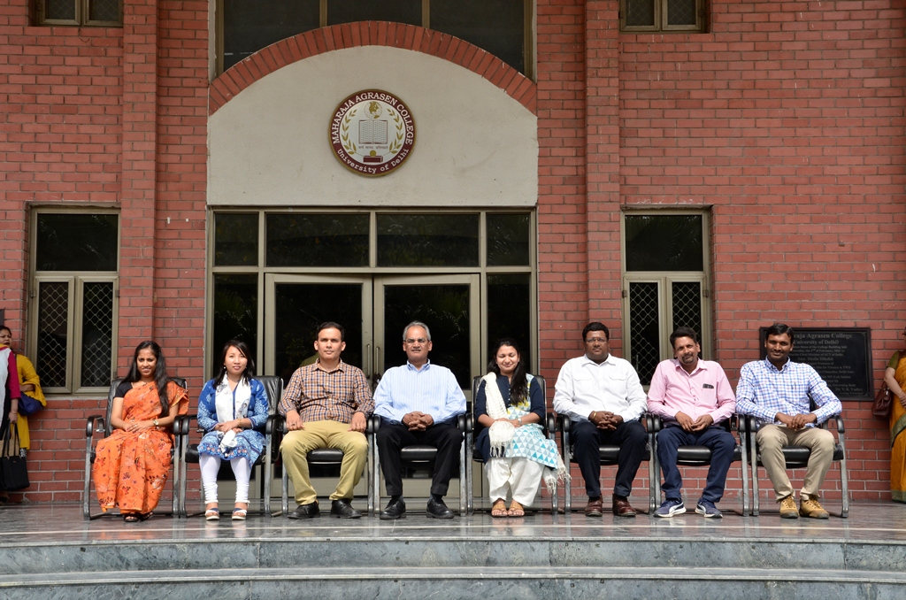

The B.A (H) Journalism course aims at foregrounding the role of journalism in a democracy. It helps the students to refine their linguistic and communicative skills. It provides an insight into the socio-economic and political dimensions of living in a globalized world today. History of journalism and printing, social psyche and mass culture, news making, advertising and public relations are all covered for a solid foundation. In a nutshell, the course exposes the students to the core skills, challenges and rewards, integral to the profession.
To provide first-hand experience of the real professional and social life the department organizes Community Development Programmes on various occasions. Our students visit rural communities and try to understand their problems, opinions and the requisite of the societies. Department organizes talks, lectures and symposiums on various issues, which exposes students to the words of eminent achievers in the media industry. Apart from inviting media professional to the college, the students of the college are taken to various media houses to help them in becoming acquainted with the industry, its functioning and requirements.
The Department organizes Annual Journalism Festival ‘Yatharth’ every year where students showcase their talent of various media streams. The Department regularly publishes its newsletter, ‘MAC VOICE’. The entire process of editing and designing is carried out solely by the students, so that they can understand the concept of Journalism from news gathering to circulation.
The department has a state-of-the-art Media Lab for providing practical exposure to the students to make their career in Modern Media Industry with the help of latest technological equipments in all media streams. We have a Studio Floor, post-Production Lab, Audio Studio and Professional Lighting Equipments for practical exposure in the area of production. Post-Production Studio is equipped with latest Video-Editing Software i.e. FCP. The hi -tech Auditorium of the college is helpful to the students of journalism. They can preview their audio-visual projects (documentaries, short films etc.) in the auditorium which has a capacity to accommodate 700 students at a time.